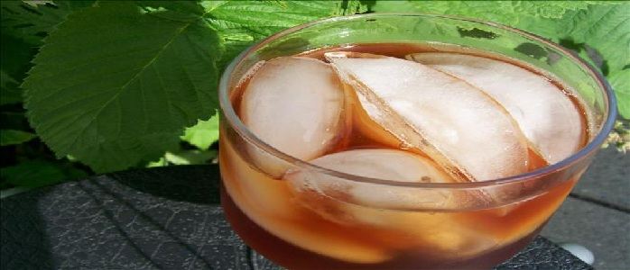

Southern Sweet Iced Tea
Ingredients:
- Yield:2
- quarts Units: US | Metric
- 6 regular tea bags
- 1/8 teaspoon baking soda
- 2 cups boiling water
- 1 1/2-2 cups sugar
Directions:
- 1 In a large glass measuring cup, place the tea bags and add the baking soda.
- 2 Pour the boiling water over the tea bags.
- 3 Cover and steep for 15 minutes.
- 4 Take out the tea bags and do not squeeze them.
- 5 Pour the tea mixture into a 2-quart pitcher; add the sugar.
- 6 Stir until the sugar is dissolved.
- 7 Add in the cold water.
- 8 Let cool; chill in the refrigerator and serve over ice.